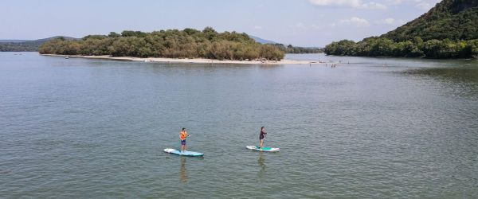
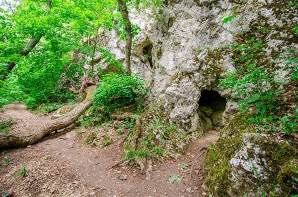
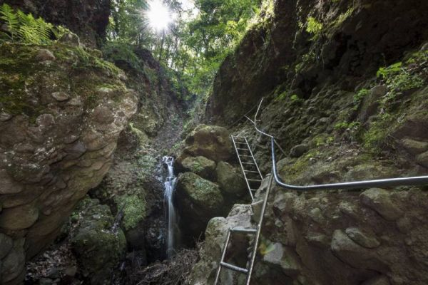

A Duna nyugalomszigete

Vízreszálláshoz két lehetőséged is van Visegrádon. Az egyik a Sportcentrumnál újonnan kialakított vízre szálló hely, ahol az Alsó-öböl védett vízfelületén egy kis gyakorlásra is van alkalom, mielőtt elindulsz a nyílt Dunára. A másik lehetőség a Királyi Palota közelében lévő Visegrádi Csónak és Kishajó Kikötő. Mindkettő helyszín könnyen megközelíthető, van parkolási lehetőség, valamint vendéglátóegységet és mosdót is találsz. Ha az első opciót választod, melyet inkább kevésbé gyakorlott evezőknek ajánlunk, van alkalmad állóvízen begyakorolni az evezést és az irányítást. Ezt követően a nyílt Dunán néhány száz méterre közlekedik a rév Nagymaros és Visegrád között. Érdemes figyelembe venni a menetrendet és ahhoz igazítani az indulást. Hamarosan elhaladsz az említett csónakkikötő mellett.
A pilisi Ősember-barlang

A túra a klastrompusztai pálos romoktól indul a kék jelzésen. Az egyetlen magyar alapítású rend kolostormaradványai a Pilis meghatározó színfoltjai. A pálosok a kezdetektől egységben éltek a természettel, hatásuk ma is érezhető a Pilis útjain. Kellemes, enyhén emelkedő sétával indulunk a kék és piros jelzésen. Tábla jelzi a barlangokat, ahova rövid kaptatón kell felkapaszkodni. Megéri felmászni, hogy megcsodálhassuk a barlang bejáratából elénk táruló látványt. A Leány- és a Legény-barlang egymástól 50 méterre fekszik, a Leány-barlanghoz a piros jelzésen jutunk el. A barlangok megtekintése után a kék/piros úton leereszkedünk a sárga jelzésig, és azon folytatjuk utunkat. Itt együtt kanyarog kellemes, széles erdei úton a pilisi lovas út, a kerékpárút és különböző gyalogutak. A sárga jelzést kell követnünk, amely másfél kilométer után élesen jobbra kanyarodik egy lejtőn. Ezen ereszkedünk le, végig követve a sárga jelzést a Basina-völgyben...
Rám-szakadék

A Rám-szakadék lenyűgöző természeti szépsége miatt méltán tartozik a térség legismertebb kirándulóhelyei közé, amit nem csak a környékről, hanem az egész országból sokan felkeresnek: a látogatók éves száma meghaladja a 60.000 főt. A szakadék maga egy vulkáni eredetű, nagyjából észak-déli irányban futó szurdokvölgy. Összeszűkülő sziklafalai olykor merőlegesek, de vannak befelé dőlő falak is. Mélysége több helyen meghaladja a 35 métert, míg szélessége helyenként a 3 métert sem éri el. A sziklamederben állandóan csörgedezik a víz, amely hóolvadáskor és nagyobb esők idején patakká duzzadhat. A szurdokban összességében 112 méteres szintkülönbséget kell leküzdeniük a túrázóknak. A völgy alsó és felső bejáratánál erdei pihenőhely fogadja az érkezőket. A Rám-szakadék természeti adottságai miatt egyike a legnehezebben járható magyarországi jelzett turistautaknak. A Pilisi Parkerdő Zrt. 2005-ben a szakhatóságokkal egyeztetett fejlesztést hajtott végre, amely során a nehezen járható szakaszokon rozsdamentes anyagból készült létrák és kapaszkodó korlátok, a pihenőhelyeken új asztalok és padok, valamint tájékoztató táblák lettek kihelyezve. Biztonsági okok miatt a Rám-szakadékot Dömös irányából egyirányúsították...